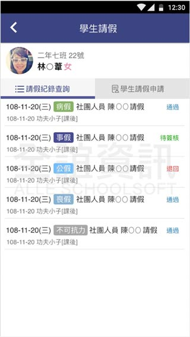
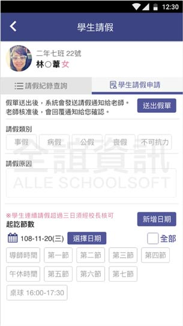

<div class="APP_application_list_class">
  <div class="APP_application_list_title">
    <span class="APP_application_list_title_left">
      <h4>學生請假</h4>  
    </span>
    <span class="APP_application_list_title_right">
      <span class="APP_list_user APP_user_orange">
        學生
      </span>
      <span class="APP_list_user APP_user_green">
        老師
      </span>
      <span class="APP_list_user APP_user_red">
        家長
      </span>
    </span>
    <div class="clear"></div>
  </div>

  <div class="APP_application_list_words">
    提供請假紀錄查詢可以一覽本學期請假紀錄以及所有申請紀錄。點選學生請假申請，支援連續多天請假、單節請假。
    <div class="APP_youtube">
        <a href="https://www.youtube.com/watch?v=ht3xPmS5_Io&list=PLI1VPatwbSXUfrWuVuV4fNpwDgd0XOuyU" target="_blank">
          <i class="fa fa-video-camera" aria-hidden="true"></i>
          點擊觀看學生請假教學影片
        </a>
      </div>
  </div>

  <div class="APP_application_list_pic">
    <span class="APP_list_pic_margin">
      
    </span>
    <span class="APP_list_pic_margin">
      
    </span>
  </div>
</div>
